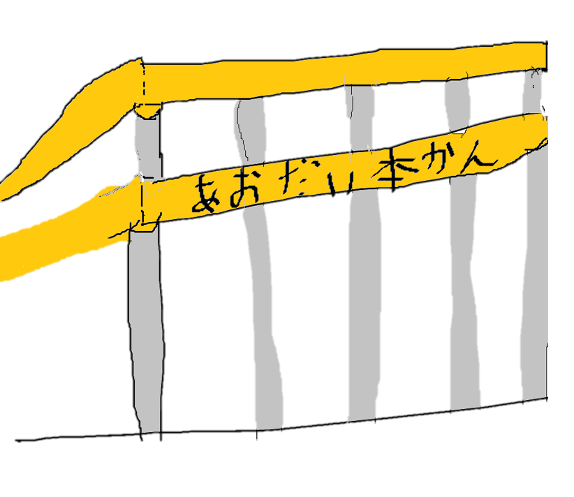

青森大学、50周年を記念し、公開授業を実施!地域の方に大学案内を
2018年で創立50周年を迎えた青森大学は50周年を境目に 基本理念改定 が噂されている。 現在、赤日新聞では事実確認を取っている。 また、 キャンパスマップの拡大/アクセスの増加 や付属図書館の書籍増加を実施した。 専門家は施設の充実を図ることで、入学生増やす作戦だと読んでいる。 しかし 付属図書館 での書籍大量入荷を実施しても図書館利用者は増えていない。 そして、最後に学生たちが 校歌・学生歌 を熱唱した。記念式典での 学長の大変有難いメッセージ! 学生には届く事はなかった。 最後に学長は、青森大学の講義の一つである じょっぱり経済学 を中心に更に地域と関わる大学へ発展する事を宣言した。